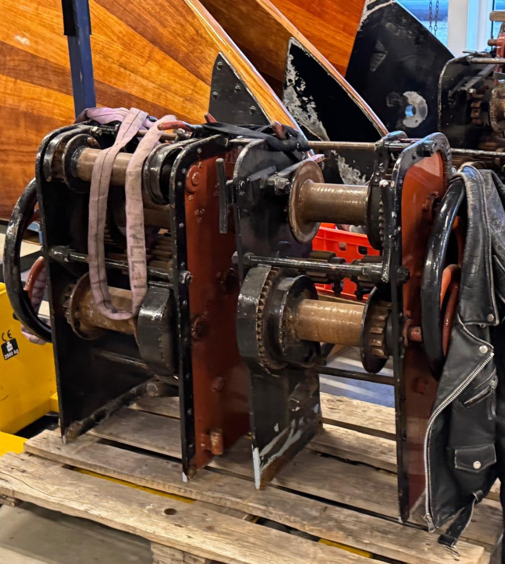

Beleef de essentie van zeilen
Oeral Thús.
Het Jouster skûtsje. Honderd jaar Fries erfgoed, volledig op windkracht, varend in het SKS kampioenschap.
SKS Kampioenschap · 18–31 juli
- 18/7Grou
- 23/7Langweer
- 28/7Elahuizen
- 20/7De Veenhoop
- 25/7Stavoren
- 29/7Lemmer I
- 21/7Earnewâld
- 27/7Woudsend
- 30/7Lemmer II
- 22/7Terherne
- 31/7Sneek
Wat is skûtsjesilen
Een eeuwenoude Friese strijd op het water.
Skûtsjes zijn historische Friese platbodems die ooit turf en goederen vervoerden. Al ruim 180 jaar strijden ze in zeilwedstrijden. In het SKS kampioenschap mogen alleen schippers meedoen uit de oude Friese schippersfamilies. Oeral Thús vaart voor Joure, al een eeuw.
- GEBOUWD
- 1924
- ZEILOPPERVLAK
- 178 m²
- KLASSEMENT 2025
- 3e
